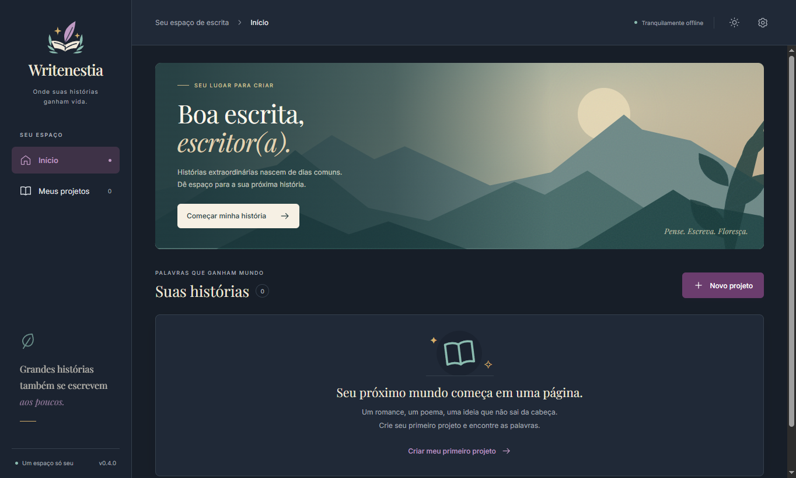

Local projects
Create and manage book projects stored on your computer.
Windows · v0.4.0
Where your stories come to life.
A free, offline-first writing app for authors. Write your manuscript, organize parts, chapters and scenes, and keep characters, places, notes and research close to the story.

Writenestia is a free desktop writing application designed for authors, novelists and storytellers.
Version 0.4 expands the project beyond the editor with a deeper manuscript structure and planning areas for characters, places, notes, research and tags.
Your projects stay on your computer, and the application is designed to keep working without requiring an internet connection.
The screenshots are displayed at their natural aspect ratio. Select any image for a closer look.
Version 0.4 keeps writing at the center while adding tools for larger, more organized projects.
Create and manage book projects stored on your computer.
Structure a manuscript in multiple levels instead of keeping everything in one long document.
Use headings, bold, italic, underline, lists, quotes and other writing controls.
Search inside the current scene and replace one or all matches.
Track daily word progress and the current writing session.
Use focus mode or fullscreen when you want fewer distractions.
Switch between light and dark appearances from the settings.
Work offline with local saving and draft recovery support.
Writenestia v0.4 introduces dedicated planning areas so important story information does not need to live in separate documents.
Changing Writenestia's interface language does not automatically translate or modify the text you wrote.
The current focus remains reliability, writing, organization and planning before more advanced features.
Parts, chapters, scenes, characters, places, notes, research, tags and writing status expand the project structure.
Worldbuilding, timeline, statistics, stronger backups, history and import/export can continue to grow through later 0.x releases.
The stable milestone aims to support developing and organizing a complete book inside Writenestia.
Download Writenestia v0.4 for Windows from itch.io.
No essential feature is locked behind payment.
If Writenestia helps your writing and you want to support development, you can leave an optional donation through itch.io.
Support on itch.io